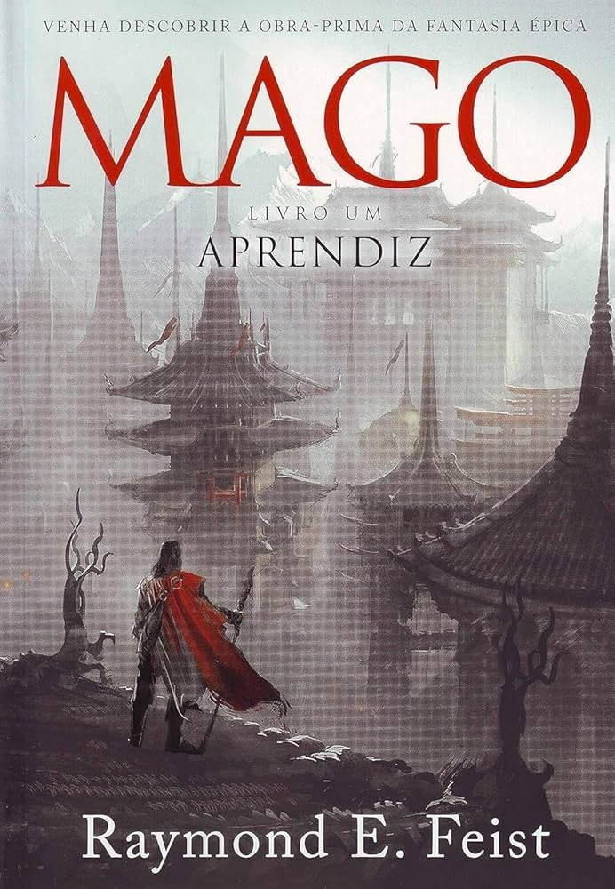

Mago: Aprendiz
Em Mago: Aprendiz, de Raymond E. Feist, somos transportados para o Reino das Ilhas. O órfão Pug inicia sua jornada como aprendiz do mestre Kulgan, enquanto uma ameaça vinda de outro mundo surge através de fendas espaciais.